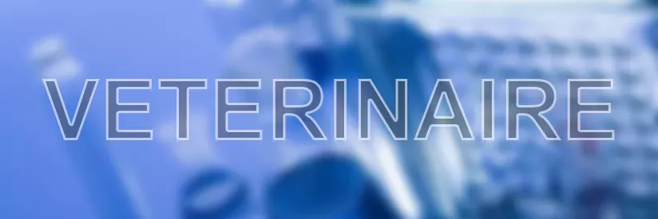
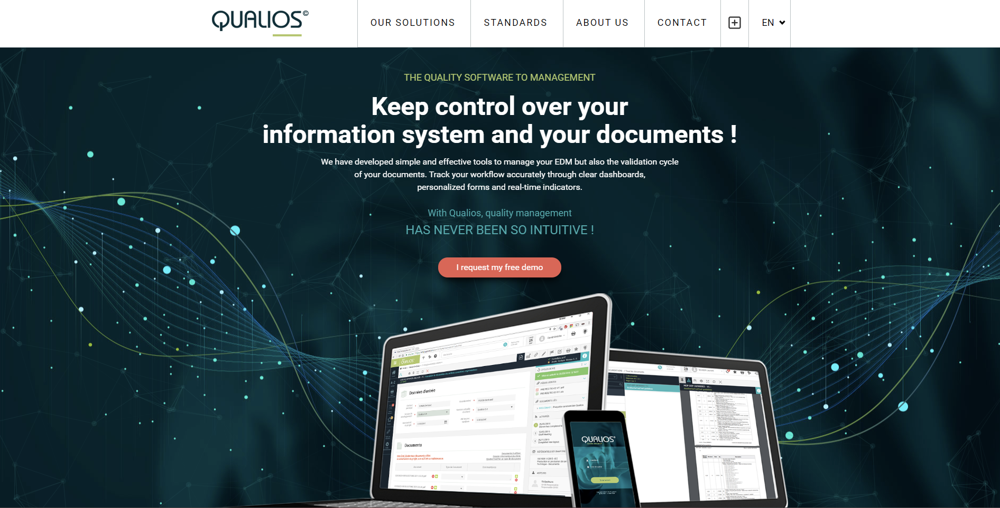
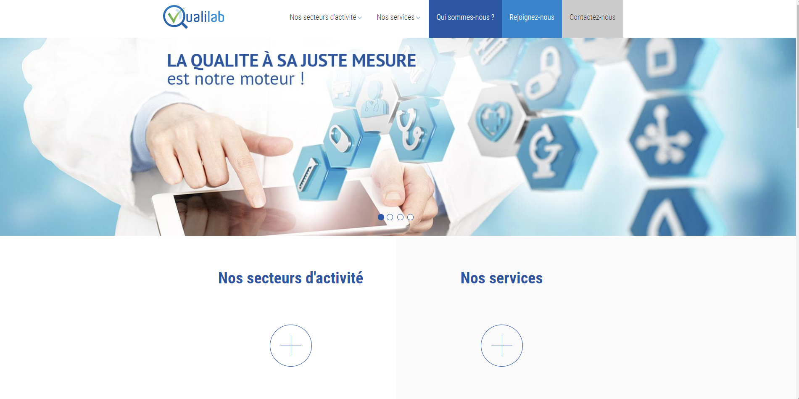
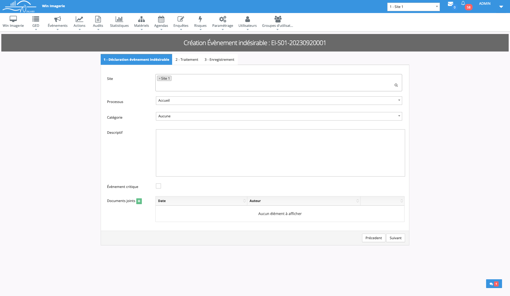
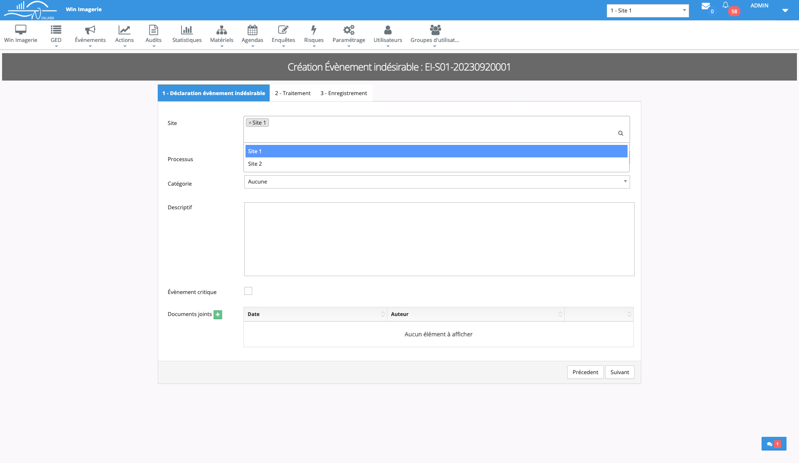
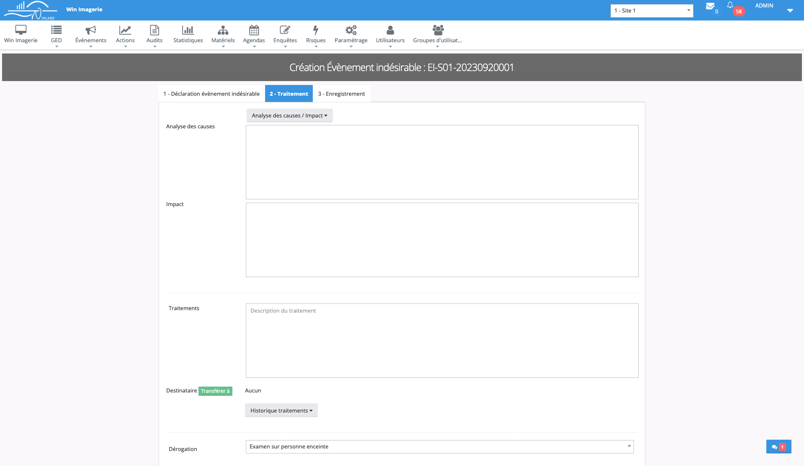
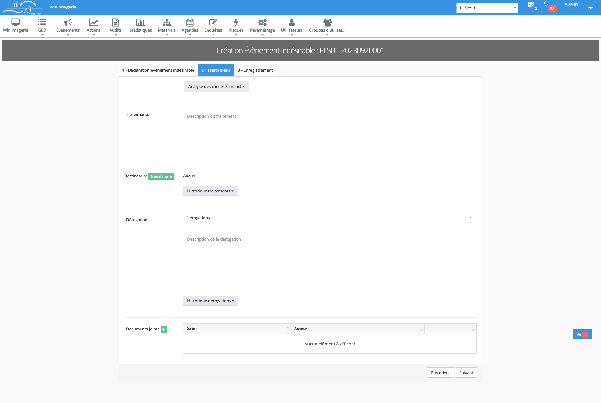
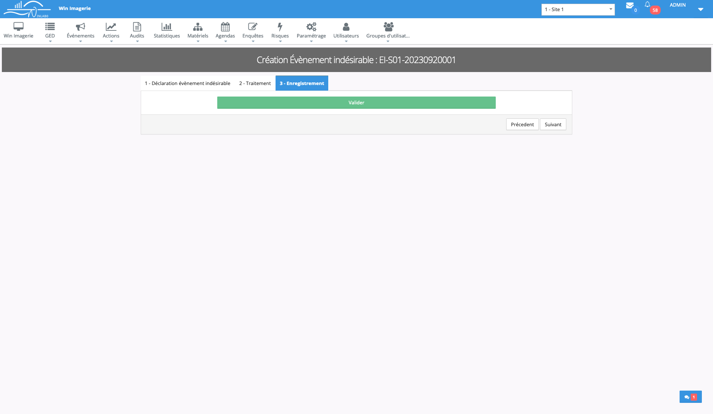
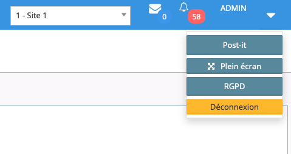
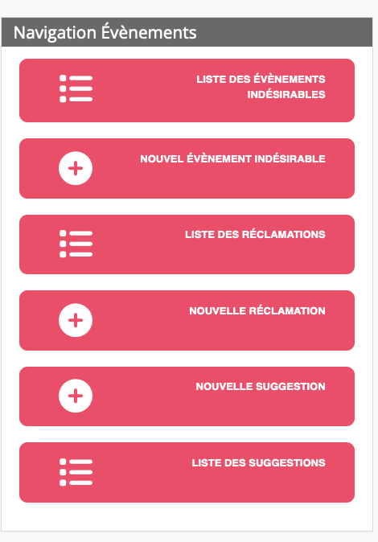

Idée du projet
Avant d'entrer en formation à l'Adrar, j'ai déjà effectué un stage dans une entreprise d'informatique suite à un projet pro. Je les ai donc contactés afin de savoir s'ils avaient une idée de projet fil rouge à me proposer pour la formation. Et ils m’ont donc proposés de créer l’application mobile de leur logiciel de management de la qualité, mais dans un premier temps, uniquement la partie permettant de créer des évènements indésirables.
Présentation
Winlabo, qu'est-ce que c'est ?
Winlabo est une gamme de logiciels développés par l'entreprise CCIF qui permettent d’assurer une gestion globale des laboratoires de biologie médicale, ainsi qu’un management de la qualité optimisé. CCIF est un éditeur de solutions informatiques, basé à Béziers et spécialisé depuis 1981 dans ce type de logiciels destinés aux professionnels de santé.
Expertise:
Les laboratoires de biologie médicale:
Les laboratoires d'analyses Vétérinaire:
Objectifs de l'application
Tout simplement de faciliter davantage pour leurs clients la déclaration d’évènement indésirables. Actuellement, ils peuvent le faire par ordinateur. Et le processus sera plus simple et rapide par téléphone.
Persona
Ce sont tous les centres d’imageries parce qu’ils ont des normes à respecter et il leur faut un logiciel de management de la qualité.
Concurrents
Qualios
Ageval
Qualilab
Charte Graphique
Au niveau de la charte graphique, je dois simplement reprendre les mêmes éléments que sur leur application web.
      Droits
L'intégralité des droits reviendra à l'entreprise CCIF. Je souhaite simplement conserver ce projet dans mon portfolio.
News
Notre application est évolutive et aura, à terme, les mêmes fonctionnalités que l'application Web.
Inscrivez-vous ci-dessous pour être informé des nouvelles fonctionnalités.